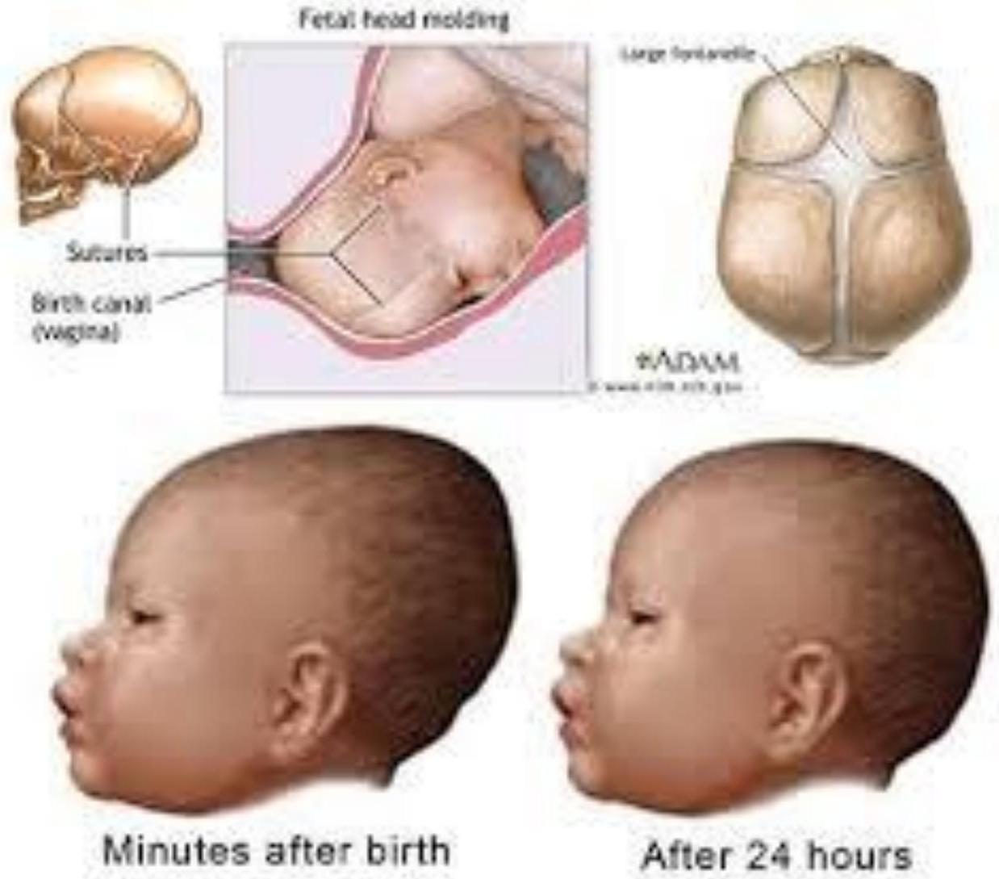
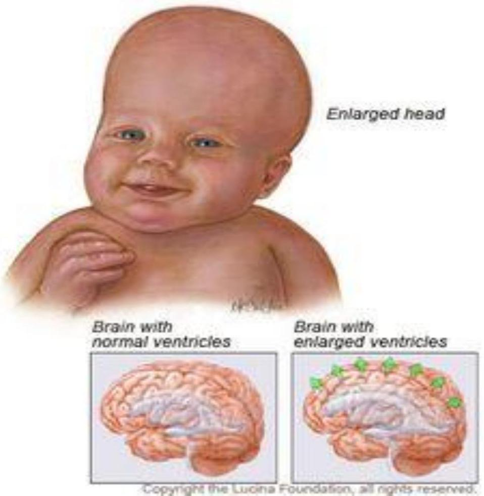
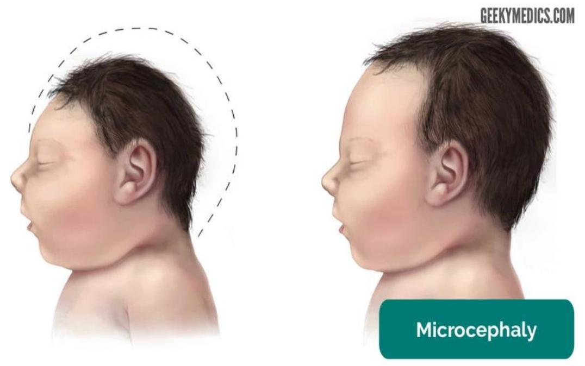
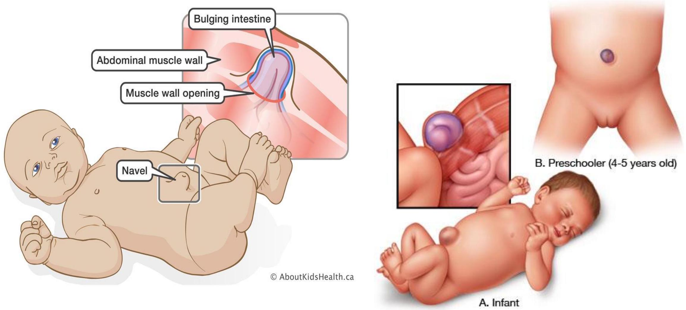
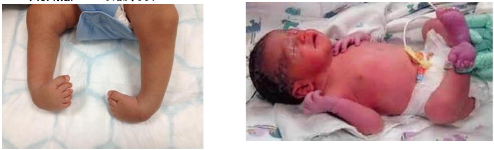
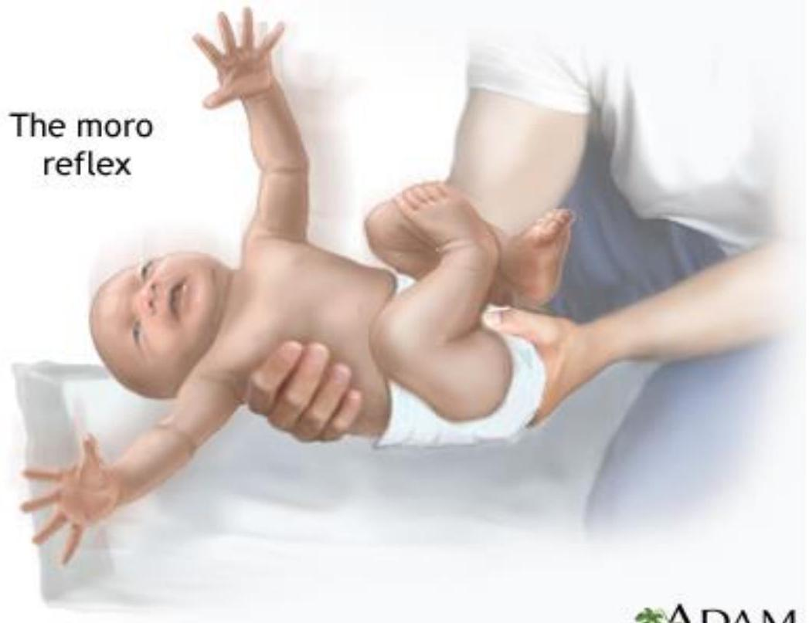
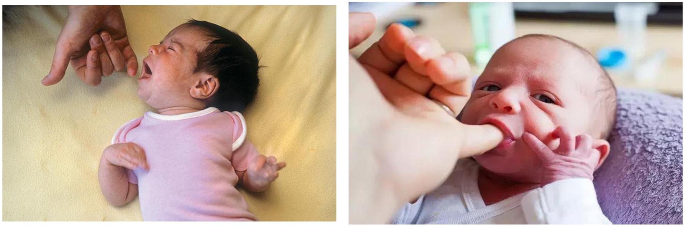
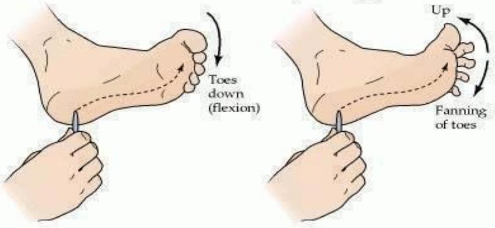

Essential Newborn Care
By: Everlyn Abuga
Objectives
- Define Essential Newborn Care (ENC)
- List the 4 basic needs of all newborns
- Describe the ENC interventions
- Explain the components of "warm chain" and "clean chain"
- Describe the immediate & subsequent care that should be given to the normal newborn
- Describe the 1st examination of a newborn
Definition
- Basic care given to a newborn to support their survival and wellbeing.
- Majority of babies are born healthy and at term
- Care during first hours, days and weeks of life determine whether they remain healthy
Why ENC?
- As a midwife, you should realize that the neonatal period is a very hazardous period.
- Statistics show that;
- Two thirds of infant deaths occur in the neonatal period.
- More than half of these deaths occur in the first 48 hours and three quarters in the first week of life.
- Therefore, the midwife's responsibility is to minimize these deaths through efficient management of the infant.
Major causes of Under 5 mortality
Four basic needs of ALL newborns
- To breath normally
- To be protected
- To be warm
- To be fed
Essential Newborn Care Interventions
- Clean childbirth and cord care
- Prevent newborn infection
- Thermal protection
- Prevent & manage newborn hypo/hyperthermia
- Early and exclusive breastfeeding
- Started within 1 hour after childbirth
- Initiation of breathing and resuscitation
- Early asphyxia identification and management
Components of ENC
- Immediate care at birth,
- Subsequent Care - Care during the first day and up to 28 days (neonatal period)
Immediate Care of the newborn at birth
(Until around 1 hour after birth)
- Provide routine care at birth for all newborns
- Identify and manage newborns who may need special care
Routine Care
- Call out time of birth
- Place baby on mother's abdomen
- Dry baby with warm clean sheet
- Wipe mouth and nose with clean cloth
- Assess baby's breathing while drying
- Clamp cord after 1-3 min, cut with sterile instrument, put sterile tie
- Put identity label on the baby
- Examine for malformations/birth injury
- Initiate breast feeding within 1 hour
- Record baby's weight
- Administer Inj. Vit K 1mg IM ( 0.5 mg for preterm) & TEO
- Cover baby's head with cloth.
- Cover mother and baby with warm cloth
Immediate newborn care
Immediate newborn care should be given in the following sequence;
- Clearing the airway
- Immediate cord care
- Provision of warmth
- Identification
- Assessment - APGAR scoring
- Weighing & 1st examination
1. Clearing the airway
- During delivery of the baby's head, excess mucus may be wiped gently from the mouth.
- Immediately the baby is born;
- Wipe the mouth gently with a sterile gauze swab.
- Hold head slightly slanting for a short period, to facilitate drainage of mucus & liquor that may have been swallowed
- Note the time of birth
- The baby is stimulated to cry in order to take its first breath.
2. Immediate cord care
- The baby is laid across the mother's abdomen as the cord is clamped, ligated and cut after 1-3 mins
- Clamp and cut cord with a sterile instrument.
- Tie the cord between 2 to 3 cms from the base and cut the remaining cord.
- Umbilical stump must be inspected after 2-4 hours of clamping.
- Bleeding may occur at this time due to shrinkage of cord and loosening of ligature
- Immediately Apply Chlorhexidine ointment to the stump (as per hospital protocol).
- DO NOT bind or bandage stump.
- Leave stump uncovered.
3. Provision of warmth
- Show the baby to the mother for identification of their gender
- Wipe the head & face of the baby and the whole body so that heat is not lost
- Place the baby on the mothers abdomen for skin to skin contact, or hand over to your assistant with a warm towel
- Wrap the baby in warm clothes, give the baby to the mother, or put it in a warm Resuscitaire or cot, head being slightly lower to facilitate drainage of secretions if any
- Maintain the WARM CHAIN
Warm chain
A warm chain is a system of keeping a baby warm immediately after delivery, during transportation, and while caring for the baby. [1] The 10 steps of the "warm chain" are described below. [14]
- Warm delivery room [1]
- Immediate drying [1]
- Warm resuscitation [1]
- Skin to skin contact at birth [1]
- Breastfeeding [1]
- Appropriate warm clothing [1]
- Bathing postponed [1]
- Mother and baby together [1]
- Warm transportation [1]
- Training & awareness raising [14]
4. Identification
- Ensure that the baby has an identification wristlet (label), which should be put on before he leaves the delivery room
- Weigh the baby
- The label should indicate;
- Names of the mother
- IP Number
- Sex of the baby
- Date and time of delivery
- Birth weight
5. Assessment
Assessment of the newborn's general condition is done to determine if extra medical care or emergency care is needed. [4] This assessment comprises 5 components & is known as APGAR score; [2, 4]
- A - Appearance (color) [4]
- P - Pulse (heart rate) [4]
- G - Grimace (response to stimuli) [4]
- A - Activity (muscle tone) [4]
- R - Respiratory effort (breathing) [4]
APGAR scoring.....
- Each component is given a score of 0, 1 or 2. [2]
- The baby is scored at one minute after birth, at five minutes and then ten minutes (PRN). [2]
- A normal baby has an APGAR score of 10 at one minute and 10 at five minutes.(written as a fraction)
- Normal score : 7-10. [2, 7]
- Approx. 70% of newborns score 7 or better.
- Remember: A score at five minutes gives a more accurate prediction regarding survival. [7] A low score at five minutes is, therefore, more serious than a low score at one minute after birth. Notify pediatrician if score is six or below at five minutes. [4]
How to score the baby
| Sign/scores | 0 | 1 | 2 |
|---|---|---|---|
| Appearance/color | Pale/blue | Pink body, blue extremities (Acrocyanosis) | Completely pink |
| Pulse/heart rate | Absent | < 100 beats/min | > 100 beats/min |
| Grimace/response to stimuli | Absent | Facial grimace | Cry, cough or sneeze |
| Activity/muscle tone | Limp | Some flexion of limbs | Active movement |
| Respiratory effort/breathing | Absent | Slow irregular breathing/ weak cry | Strong cry |
Resuscitation
- All babies must be assessed for need of resuscitation at birth
- At least 1 person skilled in providing resuscitation must be present
- Ventilation must start within 1 minute of birth (1st golden minute)
- If no breathing: 5 inflation breaths then assess for HR; if absent, give 3 compressions to 1 breath
Immediate care.....
- Observe the breathing and colour of the baby constantly, and the cord for any oozing
- Allow the baby to rest for one hour before any other procedure is done
- Apply TEO 1% to prevent ophthalmic neonatorum
- Administer Vitamin K inj. 1 mg IM ( 0.5 mg for preterm) on the thigh, to reduce risk of VKDB
- Perform physical examination of the baby
1st general/physical examination of the newborn
Aims
- To determine maturity of the baby
- To exclude congenital abnormalities
- To detect any birth injuries
Requirements
- A Warm Environment
- Good Light
- Swabs In a gallipot
- Tape Measure
- Stethoscope
- Gloves
- Clinical Thermometer
- Lubricant
- Weighing Scale
- Second Hand Watch
1st Exam of the newborn
Perform a head-to-toe physical examination;
- Head & neck
- Eyes
- Ears
- Nose
- Mouth
- Chest
- Abdomen
- Extremities (arms, legs, palms, feet)
- Reflexes (Primitive & Protective)
Head Shapes and Conditions
Moulding
Hydrocephalus
Microcephaly
Brachycephaly
Key Facial Characteristics of Down Syndrome
Abdomen
Umbilical hernia
Extremities Conditions
Talipes/club foot
Acrocyanosis
Acrocyanosis in newborns - Bluish discoloration of hands and feet

Reflexes - A part of Neurological assessment
Primitive reflexes
- Moro/ startle
- Rooting
- Sucking and swallowing
- Grasp reflex
- Step reflex
- Asymmetrical tonic neck reflex.
- Traction response
Protective reflexes
- Blinking and corneal reflexes
- Gag, cough & Sneezing reflex
- Yawning reflex
- Crying reflex
Reflex Examples
Moro/startle reflex
Newborns fling arms and legs out, and pulls them back again when startled
Rooting and Sucking reflex
Grasp reflex - Palmar & Plantar
Asymmetric tonic neck reflex (fencing reflex)
Protective reflexes
- Blinking and corneal reflexes:- Protects eyes from trauma and bright light
- Sneezing and cough reflex:- Used to clear throat and ensure clear airway
- Yawning reflex:- to draw additional oxygen
- Crying reflex:- helps to withdraw from painful stimuli
Subsequent care of the newborn
Principles of subsequent management of the neonate include:
- Maintenance of the established respiration
- Provision of nutrition
- Provision of warmth
- Protection from injury
- Prevention of infection
- Assessment of the progress of the baby
- Education of the mother on further care & Mx of the baby
1. Maintenance of the Established Respiration
- A normal baby should continue to breathe and maintain a good skin color without medical intervention.
- A baby who tends to produce a lot of mucus should be closely watched and the airway suctioned PRN.
- Baby should be laid on his back with head turned to one side,
- Check respiration and color of baby regularly
- Avoid pillows and clothing over the face - may suffocate the baby.
- Make sure the mother does not lie on the baby may suffocate
2. Provision of nutrition
Early & Exclusive breastfeeding
- Help mother to initiate breastfeeding within first hour of birth
- Demand feeding (baby-led breast feeding) is ideal and should be advocated.
- Encourage the mother to breast feed exclusively for 6 months (no need for additional fluids/water)
- To ensure that the baby gets both fore and hind milk, the mother needs to B/feed the baby on one breast until completely empty. Ensure;
- Good position
- Good attachment
- Effective suckling
To check attachment, look for:
- - Chin touching breast
- - Mouth wide open
- - Lower lip turned outward
- - More areola above than below the mouth
3. Provision of warmth
- Baby should be kept warm but do not overheat
- Prevention of hypothermia - observe for signs of cold stress
- Mothers should be taught about appropriate clothing for varied climates.
- They should dress the baby according to the change of environmental temperature.
- Baby wraps should be loose enough to allow for free movement of the legs and arms.
The "warm chain"
Def'n: A set of inter-linked procedures to be undertaken at birth & during the next few hours and days, to minimize heat loss in all newborns. [14]
The warm-chain consists of 10 steps;
- Warm delivery room (>25°C) [14]
- Warm resuscitation [14]
- Immediate drying [14]
- Skin-to-skin contact [14]
- Breastfeeding [14]
- Bathing postponed [14]
- Appropriate clothing [14]
- Mother & baby together [14]
- Professional alert
- Warm transportation [14]
Kangaroo mother care (KMC)
Skin to skin contact with the baby; Not less than 1 hour at a time
Benefits;
- Provides warmth, promotes B/Feeding,
- Protects from infection
- Emotional bonding
- Physiological stability, reduces apnea
- Useful for LBW infants
4. Protection from injury
- Protect the neonate from the sun, wind, suffocation and injury
- Injuries may be inflicted by the long nails of the mother, midwife, the baby itself
- Advice mother to cut the nails of the baby short to avoid scratching
- Advice mother on protection from home accidents like cuts, burns, scalds.
- The neonate's skin is fragile and easily bruised;
- Irritants such as antiseptics, fabric softeners and starch are discouraged.
- Creased hard fabrics, stool and urine may interfere with the skin integrity.
5. Prevention of infection
- Cleanliness at delivery reduces the risk of infection for the mother and baby, especially neonatal sepsis and tetanus.
- Cleanliness requires mothers, families, and health professionals to avoid harmful traditional practices, and prepare necessary materials.
- Hand washing is the single most important step to be emphasized to both family members & HCWs
- The "clean chain" is a series of actions that are used to prevent infection transmission to the newborn
The "clean chain"
The 'Clean chain' has to be followed both at the time of delivery and then till the time of discharge to protect the infant from infections. Composed of "Clean" components during delivery & after delivery
a) Clean delivery (WHO's six cleans)
- Clean attendant's hands (washed with soap)
- Clean delivery surface
- Clean cord- cutting instrument (i.e. razor, blade, scissors)
- Clean string to tie cord/ cord clamp
- Clean cloth to cover the baby
- Clean cloth to cover the mother
b) After delivery
- All caregivers should wash hands before handling the baby
- Feed only breast milk
- Keep the cord clean and dry
- Use a clean absorbent cloth as a diaper/napkin
- Wash your hands after changing diaper/napkin.
- Keep the baby clothed and wrapped with the head covered
6. Assessment of baby's progress
- The midwife should be able to determine that the baby is healthy and thriving.
- A baby who is healthy and growing is;
- Active
- Feeds well,
- Free from infection and
- Gains weight steadily.
- In order to observe these, it is necessary to examine the baby thoroughly at least once a day during bath time.
7. Education of the mother
Emphasis should be laid on the following:
- Personal hygiene and environmental hygiene (Demonstrate baby bathing, diaper changing, care of feeding utensils)
- Exclusive breast feeding
- Attendance of post-natal clinic, family planning and child welfare clinics for immunization
- How to care for the baby (esp. if primigravidae);
- Instruct mother not touch cord unnecessarily,
- show them how to clean eyes or ears
- Not to give un prescribed drugs or herbs to the baby
- Maternal nutrition
Danger signs to observe for;
- Change in baby's colour,
- Appearance of septic spots,
- Poor feeding habits,
- Excessive crying & irritability,
- Diarrhea and vomiting.
Mother should return to hosp. for assistance if she observes any of these